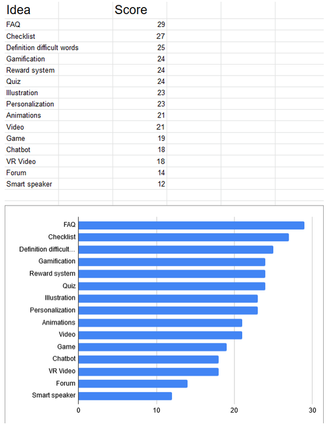

Volgens HR en de recruiters lezen de internationals het guidebook niet, of niet aandachtig genoeg. Hierdoor houden ze veel vragen over die ze opsturen naar HR en of de recruiter.
De internationals vinden de hoeveelheid informatie teveel. Ook vinden ze de guidebook saai omdat het grotendeels alleen tekst bevat. Als ze vragen hebben sturen ze deze gelijk door naar de recruiter omdat dat makkelijk is.
Uit de ideate fase zijn er verschillende ideeën bedacht om het probleem op te lossen. Na het testen van de ideeën is er naar voren gekomen dat een FAQ het meest gewild is.

Aan het staafdiagram is er te zien dat er 5 ideeën onder de 20 punten scoren. Dit zijn: game, chatbot, VR video, Forum en de smart speaker. Dit zijn de ideeën niet aanslaan bij de doelgroep.
Door de andere ideeën te combineren is het concept geboren. Met gamification heeft elke gebruiker een persoonlijke proces. Hierbij komt personalisatie bij kijken. Dit is te realiseren met een online portal. Indicia beschrijft een portal als: “Een portal is een op web gebaseerde toegangspoort naar afgeschermde informatie die op geïntegreerde en gepersonaliseerde wijze wordt aangeboden.”
Websites zijn publiekelijk voor iedereen die deze bezoekt. Portals zijn gemaakt voor een specifieke groep mensen. In mijn gevoel is de portal voor de internationals van ICT Group nadat ze het contract hebben getekend.
Christine Reyes (2017) schrijft in een artikel dat een portal een logische keuze is als er:
Er komen twee onderdelen centraal naar voren in het portal. Een FAQ en informatie van de guidebook zelf. Nadat de gebruiker ingelogd is op de portal komt diegene op de homepagina waar ze meteen de FAQ en informatie te zien krijgen.
De gebruiker kan bij de profielpagina een aantal opties kiezen waarbij de content wordt aangepast van de informatie. Als de gebruiker aangeeft dat zijn of haar land van herkomst Polen is, hoeft diegene geen medische onderzoek voor tuberculose te krijgen. Deze informatie hoeft dan niet getoond te worden op de portal omdat het niet relevant is.
Er komt ook een checklist voor de gebruiker om aan te geven welke stappen er gezet moet worden voor een emigratieproces zonder problemen. Via de checklist kan de gebruiker naar de juiste pagina met meer informatie. Ook de checklist kan gepersonaliseerd worden door content te laten zien die alleen van toepassing is voor de gebruiker.
Informatie pagina’s op de portal worden versterkt met afbeeldingen, video's en diagrammen om variatie te geven. Ook wordt de informatie duidelijker en het wordt beter onthouden door middel van het picture superiority effect.
Optioneel voor de gebruiker is er een optie om een quiz te starten. De gebruiker krijgt dan een serie van vragen over de informatie die op de portal te vinden is. Na de quiz krijgt de gebruiker een score te zien, wat een indicatie geeft of ze de informatie hebben begrepen of niet.
Om de gebruiker motiveren om de portal te gebruiken wordt er gebruik gemaakt van gamification. Elementen uit games worden gebruikt in de portal. Van de Gamification Framework van Yu-Kai Chou worden accomplishments, unpredictability en ownership.
Accomplishments
Door progressie te laten zijn aan de gebruiker wordt hij of zij gemotiveerd om verder te gaan. Als de gebruiker de helft van zijn of haar checklist al heeft aangevinkt, voelt diegene zich bereid om het lijstje af te maken. Ook wordt er een progressie bar toegevoegd aan de quiz zodat de gebruiker kan zien hoe ver hij is.
Ownership
Door de gebruiker punten te geven na het beantwoorden van de quiz heeft de gebruiker het gevoel dat de punten echt voor hen zijn. De punten kunnen ze dan omwisselen voor een reward. Het is geheel aan hen of ze de punten willen omwisselen.
Unpredictability
Door het toevoegen van ‘random’ gebeurtenissen wordt de gebruiker gestimuleerd om actie te ondernemen. Zo kan je punten verstoppen op verschillende pagina’s zodat ze op zoek zullen gaan. Ook zijn mensen van nature nieuwsgierig, door een button te laten gloeien wordt de kans groter dat ze erop klikken.
Om de gebruiker te overtuigen om de portal te gebruiken wordt er gebruik gemaakt van de overtuigingsprincipes van Cialdini. De twee principes die gebruikt worden zijn Liking en Consensus.
Liking
Mensen vinden het leuk als ze complimenten krijgen. Dit kan ingezet worden in de portal in combinatie met gamification. Als ze iets goeds hebben gedaan, bijvoorbeeld alle vragen goed beantwoorden. Of wanneer ze een easter egg hebben gevonden een compliment krijgen, kan dit ze motiveren om de portal te blijven gebruiken
Concensus
Als mensen gaan twijfelen gaan ze kijken naar wat andere gedaan hebben. Onder de quiz knop zou kunnen staan dat er al een X aantal mensen voor hun de quiz hebben gestart. Dit motiveert de gebruiker om de mensen te volgen en ook de quiz te starten.
Indicia. (z.d.). Wilt u een portal bouwen voor uw organisatie? |Indicia. Geraadpleegd op 17 oktober 2019, van https://www.indicia.nl/business-portals/
Reyes, C. (2017, 7 juli). Portal vs. Website: When to Use Each. Geraadpleegd op 18 november 2019, van https://www.liferay.com/blog/en-us/digital-strategy/portal-vs-website-when-to-use-each
Terry L. Childers, Michael J. Houston, Conditions for a Picture-Superiority Effect on Consumer Memory, Journal of Consumer Research, Volume 11, Issue 2, September 1984, Pages 643–654, https://doi.org/10.1086/209001